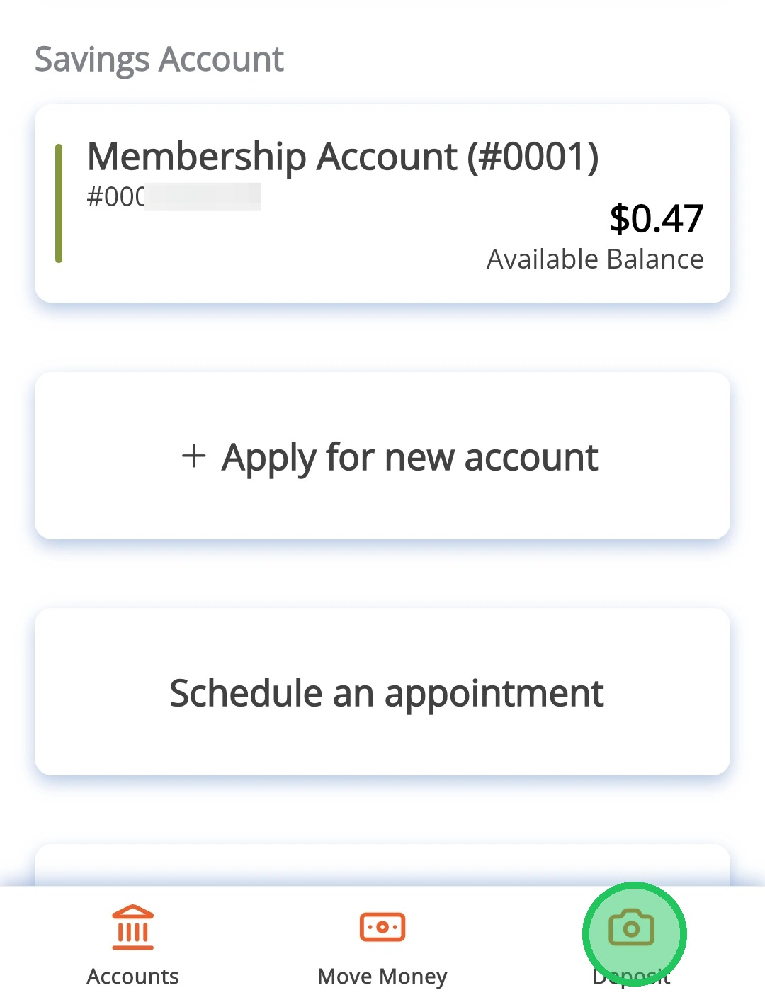
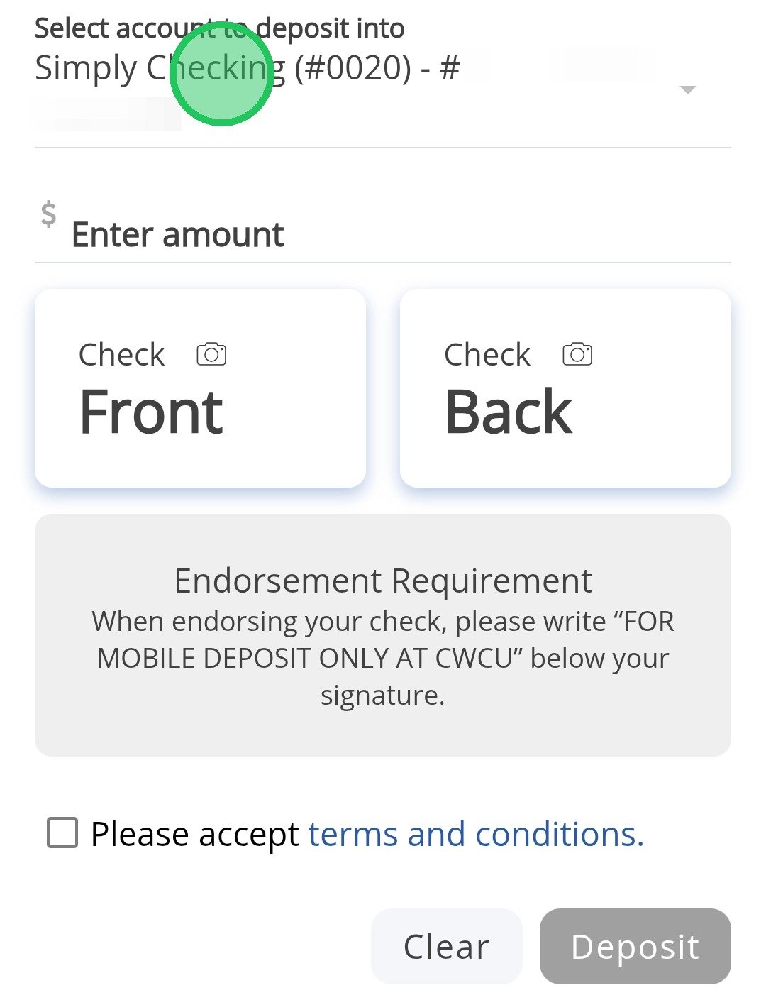
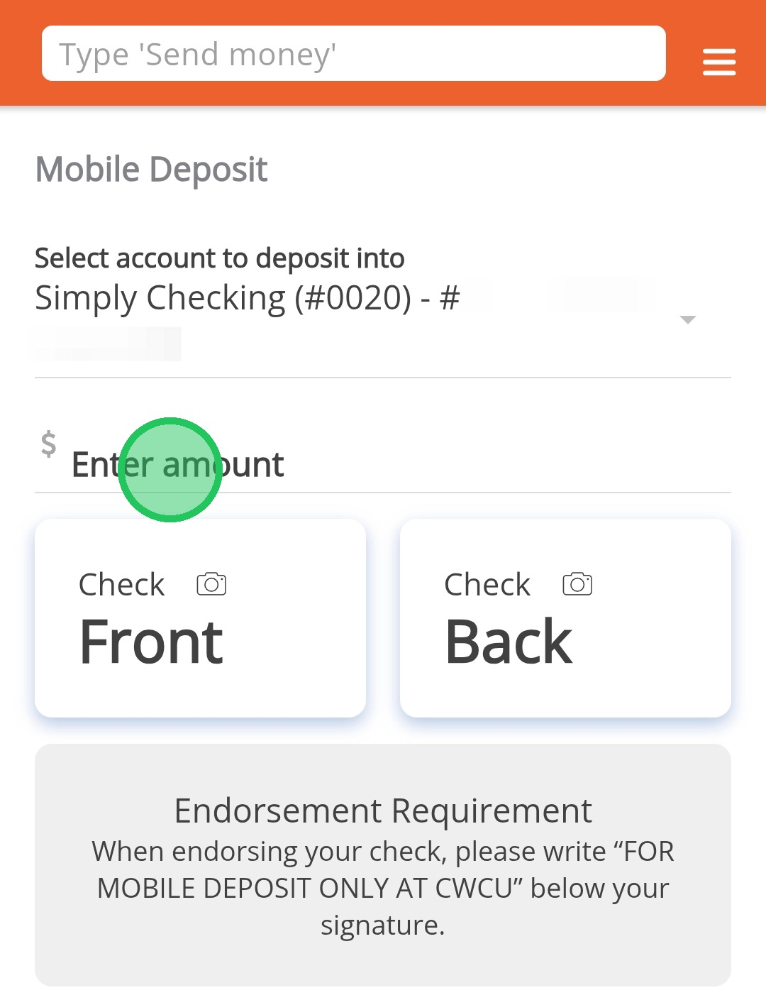
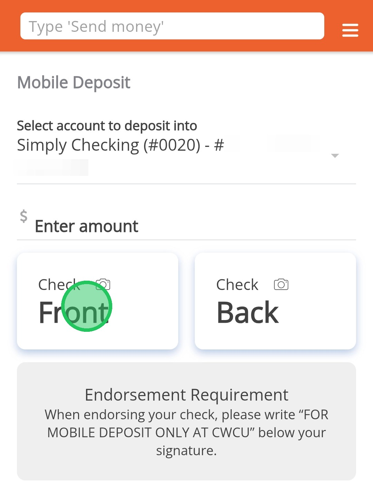
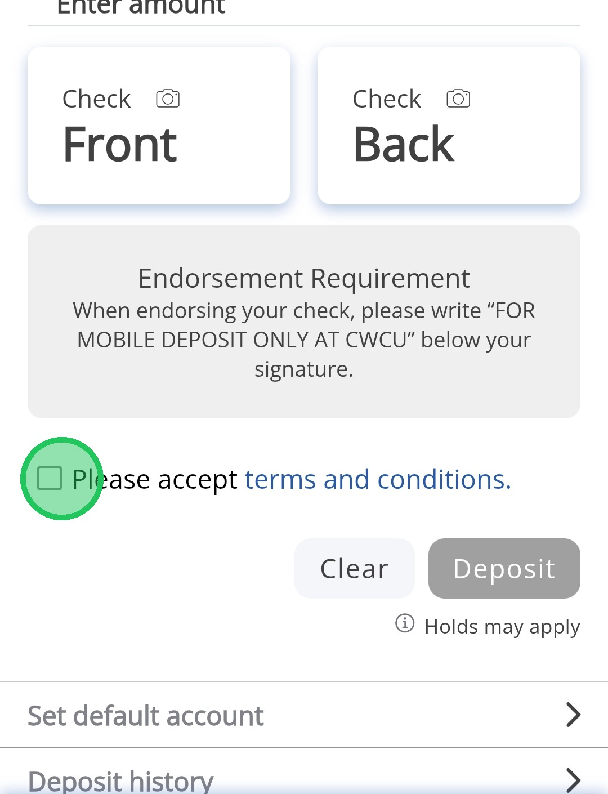
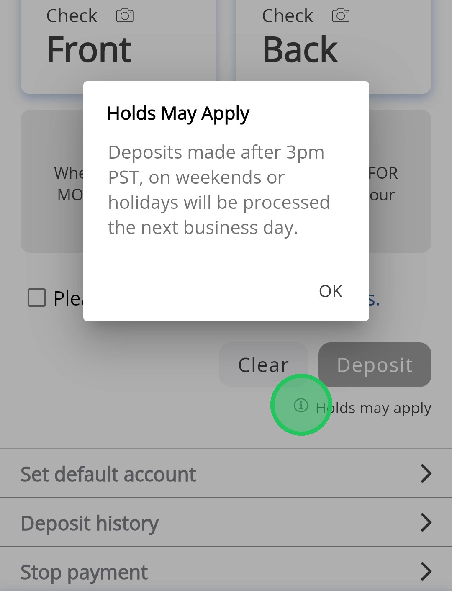
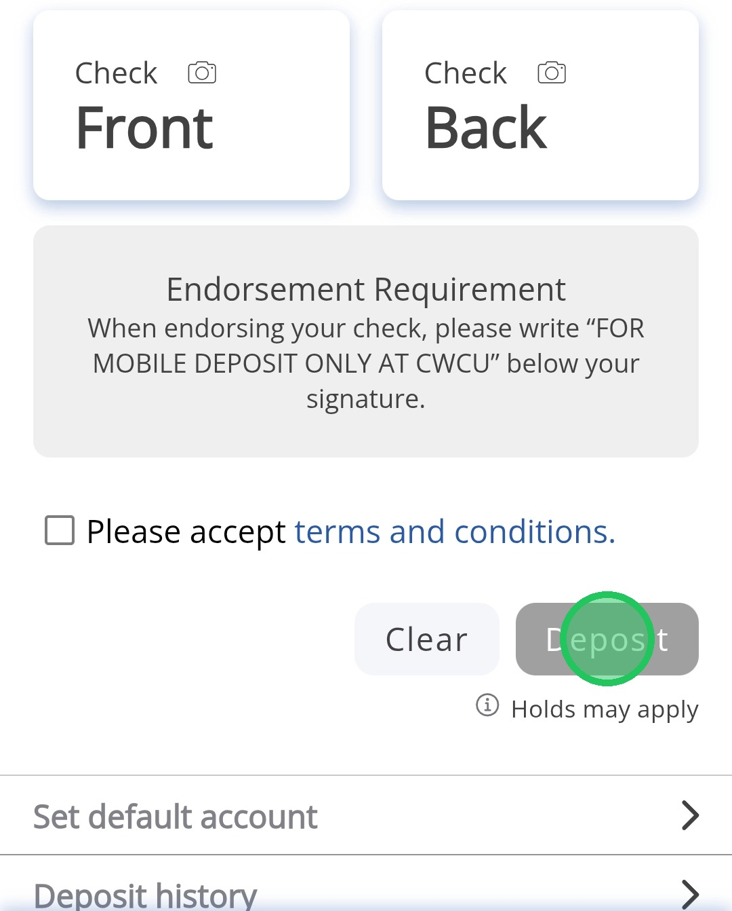
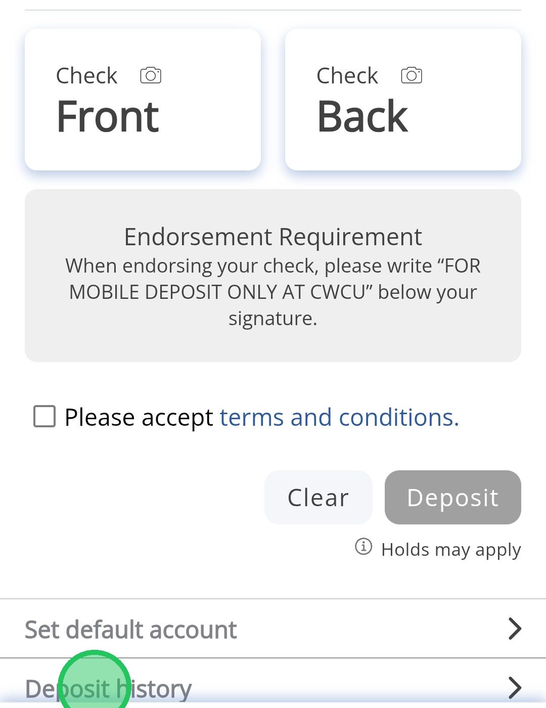
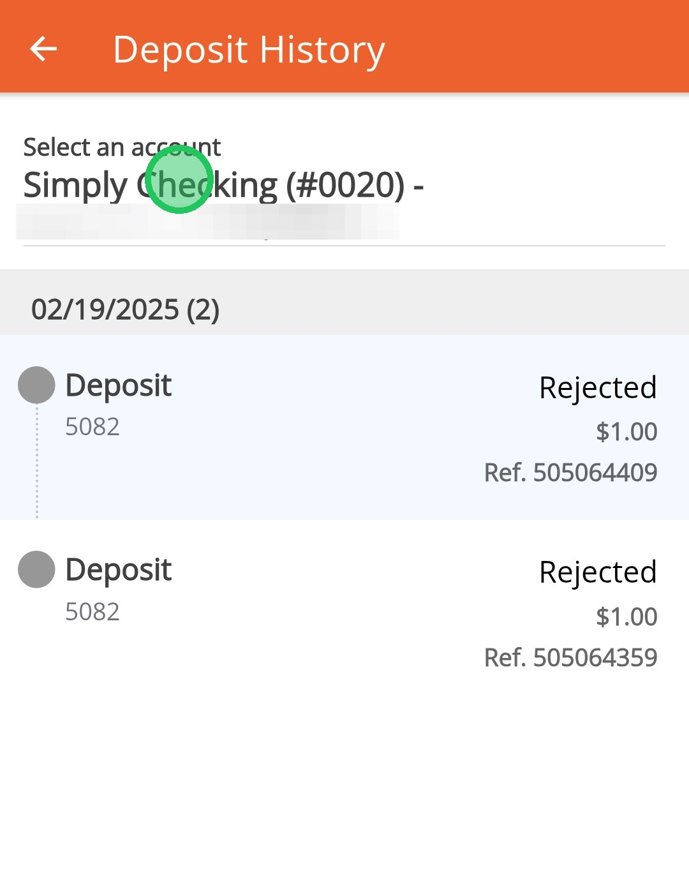

Make a Mobile Deposit
This guide is designed to help you make a mobile deposit on the CW Banking app, and also show how to view mobile deposit history.
Deposits made after 3 PM PST, on weekends or holidays will be processed the following business day.
1
Tap "Deposit"

2
Select the account for the deposit

3
Enter the check amount

Make sure your check is properly endorsed or it may be rejected. The endorsement needs to read "FOR MOBILE DEPOSIT ONLY AT CWCU" below your signature.
4
Take a picture of the front and back of your check

5
Check the box to accept the terms and conditions

6
Tap the i next to "Holds may apply" for deposit processing info.

7
Tap "Deposit" to finish

You'll get email notifications when your deposit is received, approved, or rejected.
8
Tap Deposit History to view all your mobile deposit statuses.

9
Switch accounts at the top to view deposit history for different accounts. Status, amount, and reference number are shown for each deposit.
